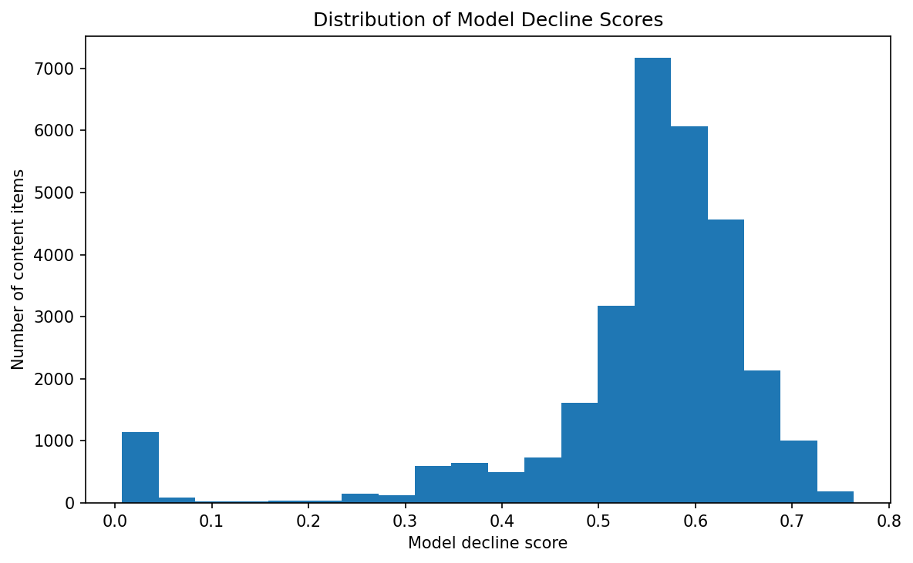

This study asks whether observed content and search-performance signals can be used to prioritize content items for human review when the observed trend indicates decline.
The analysis uses an anonymized FlyRank ML Internship dataset containing 30,000 content-item rows and 44 columns, with a binary label derived from observed trend direction.
A Random Forest model using five observed features was evaluated alongside a simple baseline, with client-grouped validation used to provide a more conservative estimate of generalization.
The client-grouped evaluation measured an F1 score of 0.6730, with 0.5283 precision and 0.9270 recall, while training and test clients had zero overlap.
These results support using the model as a directional decision-support ranking signal for human review, rather than as proof of future decline or proof that a particular content intervention will improve performance.
Problem Statement
Content teams may have more pages to review than they can inspect manually. A useful prioritization system can help reviewers decide which content items deserve attention first.
The research question is:
The intended decision is therefore a review-prioritization decision. The model does not make the final editorial decision.
Dataset
The analysis uses the anonymized starter dataset
data/raw/content_refresh_anonymized.csv.
The modeling unit is one pseudonymized content item.
The target is derived from the observed trend direction:
trend_direction == "down" is mapped to the
declining class.
Excluded information
Trend, future-outcome, label, and refresh-decision fields were excluded from the predictive feature set to reduce leakage risk. Client identifiers were used for grouped validation only and were not used as predictive features.
Modeling approach
The modeling lane uses five observed features:
Label definition
The binary target is one when the observed trend direction is
down. This represents an observed trend label and
does not establish a guaranteed future outcome.
Model
A Random Forest classifier with median imputation was used. The predicted probability of the declining class serves as the ranking score.
Baseline
The baseline prioritizes content using observed search visibility and average search position. It provides a simple comparison point before relying on the learned model.
Validation design
Client-grouped validation was used so that clients in the test set were not present in the training set. This grouped result is treated as the more conservative estimate of generalization to unseen clients.
Leakage checks
Outcome-related and future-oriented fields were excluded from the predictive features. Client identifiers were used for grouping only.
Model vs Baseline
The capstone compares a transparent baseline prioritization rule with the learned Random Forest ranking signal. The baseline uses observed 90-day impressions and average search position, while the model uses five observed content and search-performance features.
| Approach | Signals / Method | Purpose |
|---|---|---|
| ML-07 Baseline | 90-day impressions + average search position; percentile-rank scoring | Transparent content-review prioritization |
| ML-08 Random Forest | avg_position, CTR, engagement rate, scroll rate, word count | Learned decline-prioritization signal |
Measured Model Results
The following measured results come from the validation work. The grouped split is emphasized because it removes client overlap between training and test data.
| Metric | Random Split | Client-Grouped Split |
|---|---|---|
| Accuracy | 0.6352 | 0.5398 |
| Precision | 0.6121 | 0.5283 |
| Recall | 0.8924 | 0.9270 |
| F1 | 0.7261 | 0.6730 |
Interpretation
The grouped result is lower than the random-split result, indicating that generalization is more difficult when client overlap is removed. The client-grouped result is therefore treated as the more conservative estimate for unseen clients.
The model provides a measured signal for prioritization, but the results should not be interpreted as production-grade certainty. The baseline remains useful because it provides a simple and transparent comparison point for the learned model.
Overall, the workflow supports content-review prioritization as a decision-support task. It does not establish that the model will predict future decline perfectly or that acting on a high-scoring item will improve search performance.
Decline Score Distribution
The model probability is used as a ranking signal for the action queue. Higher scores move items toward earlier human review.

Figure 1. Distribution of model decline scores generated from the capstone modeling workflow.
Honest framing
- The target represents observed trend direction and does not prove future decline.
- A high model score does not prove that an item needs a content refresh.
- The model does not establish that refreshing content will improve future performance.
- Grouped validation performance is lower than random-split performance.
- The feature set does not capture every contextual factor that may influence content performance.
- Recommendation quality may change as the underlying data population changes.
Content Action Playbook
The model output is used to create a ranked review queue. These recommendations are intended to support human review, not to make automatic content decisions.
Prioritize high-scoring items for human review
Items with higher model-based decline scores should be considered earlier in the human-review queue.
Review the underlying observed signals
Reviewers should inspect the search and content- performance signals associated with the prioritized item before taking action.
Use reason codes for transparency
Clear reason codes explain why an item entered the review queue and make the workflow easier to audit.
Make the final content decision through human review
A reviewer should decide whether the appropriate action is to improve, rewrite, merge, monitor, or take no action.
Monitor the workflow over time
Review the system when the data distribution, feature behavior, label definition, or validation performance changes meaningfully.
Human review is required
Reviewers should consider content relevance, quality, strategic importance, recent changes, and whether an intervention is appropriate before acting.
- Automatic content rewriting
- Automatic content deletion
- Automatic publishing
- Automatic refresh decisions
- Treating model scores as guaranteed outcomes
Research artifacts
The analysis is organized as a reproducible research workflow. The notebooks contain the modeling, validation, and action playbook steps used to produce the paper's results.
work/notebooks/capstone.ipynb
work/notebooks/w06_validation_audit.ipynb
work/notebooks/w07_action_playbook.ipynb
Data source
Built on the FlyRank ML Internship dataset.
Data source: FlyRank
This research artifact is intended for educational and decision-support purposes. Results and recommendations should be interpreted within the limitations described above.